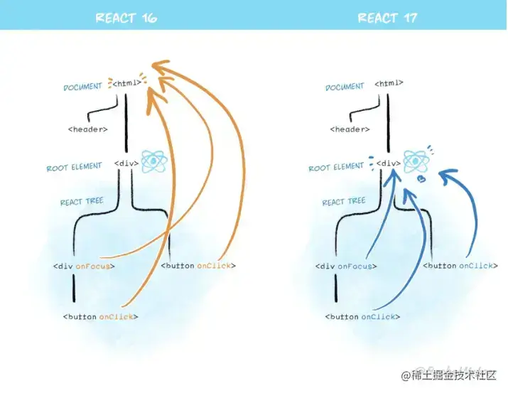

简述下 React 的事件代理机制？
参考答案
React 并不会把所有的处理函数直接绑定在真实的节点上。而是把所有的事件绑定到结构的最外层，使用一个统一的事件监听器，这个事件监听器上维持了一个映射来保存所有组件内部的事件监听和处理函数。
当组件挂载或卸载时，只是在这个统一的事件监听器上插入或删除一些对象。
当事件发生时，首先被这个统一的事件监听器处理，然后在映射里找到真正的事件处理函数并调用。
这样做的优点是解决了兼容性问题，并且简化了事件处理和回收机制（不需要手动的解绑事件，React 已经在内部处理了）。但是有些事件 React 并没有实现，比如 window 的 resize 事件。
2023.2.19更新:
在React@17.0.3版本中：
- 所有事件都是委托在
id = root的DOM元素中（网上很多说是在document中，17版本不是了）； - 在应用中所有节点的事件监听其实都是在
id = root的DOM元素中触发； React自身实现了一套事件冒泡捕获机制；React实现了合成事件SyntheticEvent；React在17版本不再使用事件池了（网上很多说使用了对象池来管理合成事件对象的创建销毁，那是16版本及之前）；- 事件一旦在
id = root的DOM元素中委托，其实是一直在触发的，只是没有绑定对应的回调函数；

盗用一张官方图，按官方解释，之所以会将事件委托从document中移到id = root的DOM元素，是为了可以更加安全地进行新旧版本 React 树的嵌套。
React 的事件代理机制通过以下方式提高了事件处理的性能和一致性：
- 事件代理：
- 绑定到根节点：React 将所有事件处理程序绑定到根 DOM 节点（通常是
document）上，而不是每个事件目标元素。这减少了需要附加的事件监听器数量。
- 事件合成：
- 合成事件：React 使用合成事件（
SyntheticEvent）来封装原生浏览器事件。合成事件提供一致的 API 和跨浏览器的兼容性。
- 事件池：
- 事件对象复用：React 使用事件池来复用事件对象，从而减少内存分配和垃圾回收的开销。事件对象在事件处理完毕后会被重用。
- 事件冒泡：
- 冒泡处理：事件会从目标元素向上冒泡到根节点，React 会在这个过程中处理事件。这与原生事件的冒泡机制相同。
- 性能优化：
- 减少事件监听器：通过事件代理，React 减少了 DOM 元素上的事件监听器，提高了性能，特别是对于动态生成的大量元素。
总结：React 的事件代理机制通过集中处理事件、使用合成事件、事件对象复用等方式，提高了事件处理的效率和一致性。